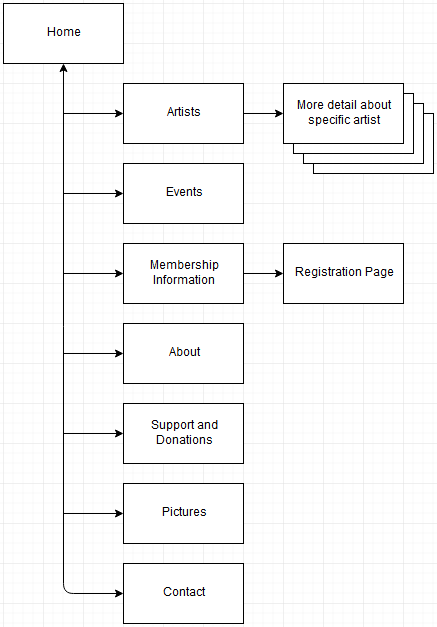

CP1406 Assignment 2 - Plan
Group: E6 - Harry Schmidt, Nicholas Stanton-Cook, Christopher Thomas
Draft & place holder information below
Mission Statement
To redesign the existing Barrier Reef Orchestra website in a way that better promotes the orchestra's services to increase revenue.
The content will be updated and reorganised to better allow users to find out the information they require.
The website will be redesigned with a more modern and sophisticated layout to align better with the prestigious nature of the orchestra and the clients wish to cater for a younger demographic.
Success Evaluation
Current sales & membership benchmarks will be compared with sales & membership benchmarks that will be taken after the launch of the website.
Target Audience
The client has mentioned a desire to get a younger demographic between the ages of 18 - 40.
The content will better describe what the orchestra does so that first time goers feel more comfortable.
The website will be designed with a and sophisticated, cultured layout, to mimic what people like to feel when they attend the orchestra.
Content
Below contains a list of pages that the website will contain
- Home
The home page will contain the navigation menus, sponsor information and news bulletins.
- Artists
This page will contain a list of all artists.
There will be a featured artist that will be highlighted on the page.
Clicking on the artist will lead the user to another page for the individual artist (next point).
- Multiple pages for the individual artists
Each artist will have an individual page that will contain additional information about them and a larger picture.
- Events
The events page will display a list of events sorted by date (soonest first).
If an event features a registered artist, it will link to the artist’s page.
- Membership Information
The page describes registration and membership benefits and links to a page that allows users to sign up.
- Registration Page
The registration page allows users to sign up online (replacing the need to download a document like on the old website).
- About
The about page has information about how the Barrier Reef Orchestra operate as well as a brief history.
- Support and Donations
Support and Donations pages provides information on how support or donations can be given to BRO,
it also includes information on where the money goes.
- Pictures
Contains a picture gallery from previous events.
- Contact
How to get in contact with BRO.
Site Flowchart

Draw.io source file can be found on github named: CP1406Assignment2.xml
GitHub Repository Link
https://github.com/poglet/CP1406-Assignment2